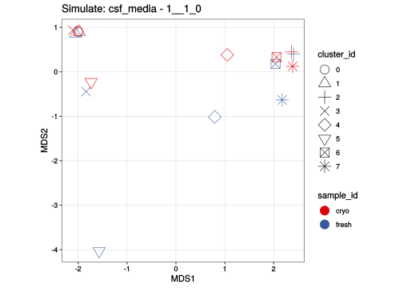
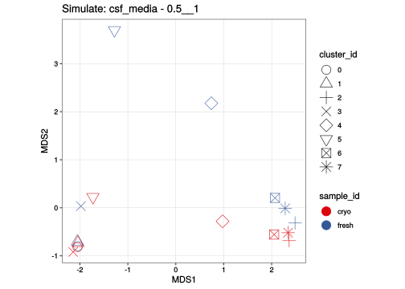
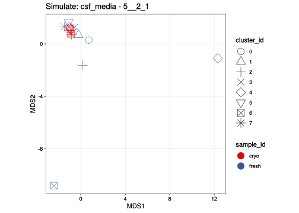
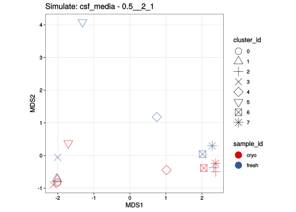
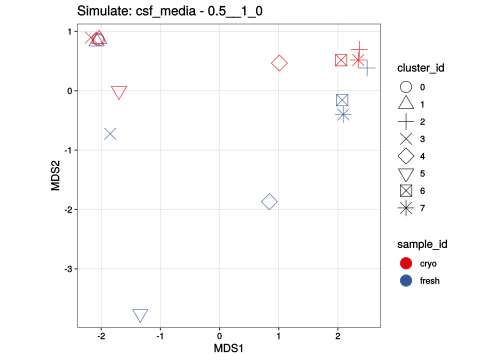
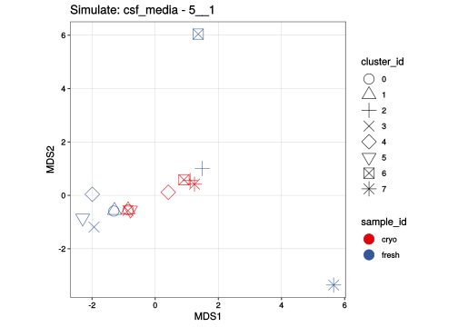
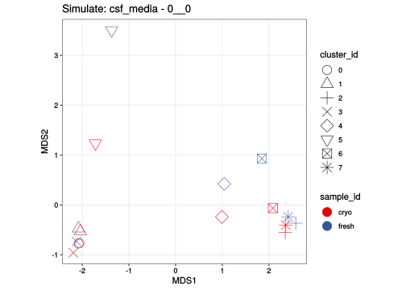
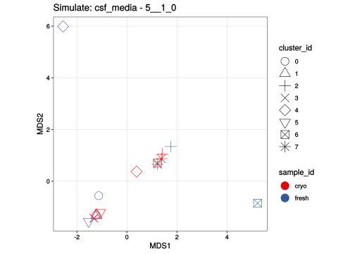
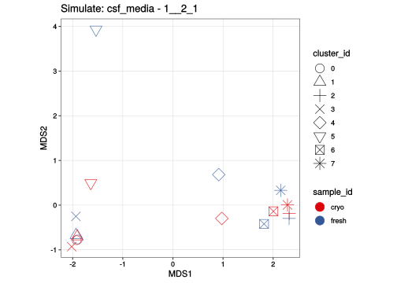
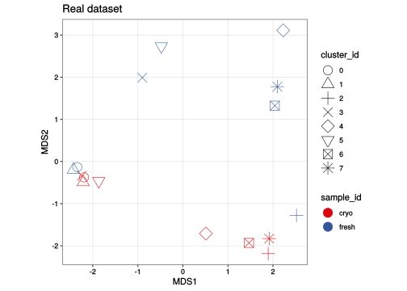

Visualize simulated batch effects
Almut Lütge
17 December, 2019
csf_media
suppressPackageStartupMessages({
library(scater)
library(CellMixS)
library(purrr)
library(data.table)
library(here)
library(tidyr)
library(dplyr)
library(stringr)
library(ComplexHeatmap)
library(edgeR)
library(scran)
library(cowplot)
library(ggrepel)
library(readr)
})Dataset and parameter
sce <- readRDS(params$data)
sce_real <- readRDS(params$real)
sim_list = list(strsplit(params$sim, ","))
print(sim_list[[1]][[1]])## [1] "1__1_0" "0.5__1" "5__2_1" "0.5__2_1" "0.5__1_0" "1__1"
## [7] "5__1" "0__0" "5__1_0" "1__2_1"param <- readRDS(params$param)
celltype <- param[["celltype"]]
batch <- param[["batch"]]
sample <- param[["Sample"]]
dataset_name <- param[["dataset_name"]]
param_real <- readRDS(params$param_real)
batch_real <- param_real[["batch"]]
cluster_real <- param_real[["celltype"]]
sample_real <- param_real[["sample"]]
table(colData(sce_real)[,sample_real])##
## E2490_fresh E2528 E2547
## 845 1377 1173#colors for plotting
tsne_cols <- c(
"#DC050C", "#1965B0", "#FB8072",
"#7BAFDE", "#B17BA6", "#FDB462")
mds_cols <- c(
"#DC050C", "#1965B0", "#7BAFDE", "#882E72",
"#B17BA6", "#FF7F00", "#FDB462") Visualize simulations
#Plot tsne
visUMAP <- function(simulation, title, ids){
p <- visGroup(simulation, ids, dim_red = "UMAP")
p[["data"]]$cluster_id <- colData(simulation)[, "cluster_id"]
p + aes(shape = cluster_id) +
scale_shape_manual(values=1:nlevels(simulation$cluster_id)) +
guides(colour = guide_legend(override.aes = list(size=3, alpha = 1))) +
guides(shape = guide_legend(override.aes = list(size=3, alpha = 1), title = "celltype")) +
geom_point(size=2, alpha = 1, aes_string(color="group_var")) +
scale_color_manual(values = tsne_cols) +
ggtitle(title)
}
visTSNE <- function(simulation, title, ids){
p <- visGroup(simulation, ids)
p[["data"]]$cluster_id <- colData(simulation)[, "cluster_id"]
p + aes(shape = cluster_id) +
scale_shape_manual(values=1:nlevels(simulation$cluster_id)) +
guides(colour = guide_legend(override.aes = list(size=3, alpha = 1))) +
guides(shape = guide_legend(override.aes = list(size=3, alpha = 1), title = "celltype")) +
geom_point(size=2, alpha = 1, aes_string(color="group_var")) +
scale_color_manual(values = tsne_cols) +
ggtitle(title)
}
#Functions from muscat to generate pseudobulk sample and genrate a MDSplot
pbMDS <- function(x, title) {
y <- as(assays(x), "list")
y <- do.call("cbind", y)
d <- suppressMessages(DGEList(y))
d <- calcNormFactors(d)
mds <- plotMDS.DGEList(d, plot = FALSE)
ei <- metadata(x)$experiment_info
m <- match(colnames(x), ei$sample_id)
nk <- length(assays(x))
df <- data.frame(
MDS1 = mds$x,
MDS2 = mds$y,
cluster_id = rep(assayNames(x), each = ncol(x)),
group_id = rep(ei$group_id[m], nk),
sample_id = colnames(x))
cols <- mds_cols
if (nk > length(cols))
cols <- colorRampPalette(cols)(nk)
ggplot(df, aes_string(x = "MDS1", y = "MDS2",
col = "sample_id", shape = "cluster_id")) +
scale_color_manual(values = cols) +
scale_shape_manual(values=1:nlevels(df$cluster_id)) +
geom_point(size = 5, alpha = .8) +
guides(color = guide_legend(override.aes = list(alpha = 1))) +
ggtitle(title) +
theme_bw() + theme(aspect.ratio = 1,
axis.text = element_text(color = "black"),
panel.grid.minor = element_blank(),
panel.grid.major = element_line(size = 0.2, color = "lightgrey"))
}
#helper functions from muscat
# Compute pseudo bulks
.pb <- function(x, cs, assay, fun) {
fun <- switch(fun,
rowMedians = getFromNamespace(fun, "matrixStats"),
getFromNamespace(fun, "Matrix"))
pb <- map_depth(cs, -1, function(i) {
if (length(i) == 0) return(numeric(nrow(x)))
fun(assays(x)[[assay]][, i, drop = FALSE])
})
map_depth(pb, -2, function(u)
data.frame(u,
row.names = rownames(x),
check.names = FALSE))
}
#split cells
.split_cells <- function(x,
by = c("cluster_id", "sample_id")) {
if (is(x, "SingleCellExperiment"))
x <- colData(x)
cd <- data.frame(x[by], check.names = FALSE)
cd <- data.table(cd, cell = rownames(cd)) %>%
split(by = by, sorted = TRUE, flatten = FALSE)
map_depth(cd, length(by), "cell")
}
aggregateData <- function(x, assay,
by = c("cluster_id", "sample_id"),
fun = c("sum", "mean", "median"),
scale = FALSE) {
if (missing("assay"))
assay <- assayNames(x)[1]
# validity checks for input arguments
stopifnot(is.character(by), by %in% colnames(colData(x)))
stopifnot(is.logical(scale), length(scale) == 1)
# get aggregation function
fun <- match.arg(fun)
fun <- switch(fun,
sum = "rowSums",
mean = "rowMeans",
median = "rowMedians")
# split cells & compute pseudo-bulks
cs <- .split_cells(x, by)
pb <- .pb(x, cs, assay, fun)
# scale
if (scale) {
if (assay == "counts" & fun == "rowSums") {
pb_counts <- pb
} else {
pb_counts <- .pb(x, cs, assay, "rowSums")
}
pb <- map_depth(pb_counts, -2, function(u)
u / colSums(u)[col(u)] * 1e6)
}
pb <- map_depth(pb, -2, as.matrix)
# return SCE
md <- metadata(x)
md$agg_pars <- list(assay = assay, fun = fun)
SingleCellExperiment(
assays = pb,
metadata = md)
}
visMDS <-function(simulation, title, ids){
agg_sim <- aggregateData(simulation, by = c("cluster_id", ids),
fun = "mean", scale = TRUE)
pbMDS(agg_sim, title)
}TSNE
lapply(sim_list[[1]][[1]], function(sim, name = dataset_name){
filename <- paste0("out/sim_char/", name, "/sim_", name, "_", sim, "_sce.rds")
sim_sce <- readRDS(file = filename)
sim_sce$sample_id <- gsub('\\..', '', sim_sce$sample_id)
visTSNE(sim_sce, title = paste0("Simulate: ", name, " - ", sim), ids = batch)
})## Scale for 'colour' is already present. Adding another scale for 'colour',
## which will replace the existing scale.
## Scale for 'colour' is already present. Adding another scale for 'colour',
## which will replace the existing scale.
## Scale for 'colour' is already present. Adding another scale for 'colour',
## which will replace the existing scale.
## Scale for 'colour' is already present. Adding another scale for 'colour',
## which will replace the existing scale.
## Scale for 'colour' is already present. Adding another scale for 'colour',
## which will replace the existing scale.
## Scale for 'colour' is already present. Adding another scale for 'colour',
## which will replace the existing scale.
## Scale for 'colour' is already present. Adding another scale for 'colour',
## which will replace the existing scale.
## Scale for 'colour' is already present. Adding another scale for 'colour',
## which will replace the existing scale.
## Scale for 'colour' is already present. Adding another scale for 'colour',
## which will replace the existing scale.
## Scale for 'colour' is already present. Adding another scale for 'colour',
## which will replace the existing scale.## [[1]]
##
## [[2]]
##
## [[3]]
##
## [[4]]
##
## [[5]]
##
## [[6]]
##
## [[7]]
##
## [[8]]
##
## [[9]]
##
## [[10]]
UMAP
lapply(sim_list[[1]][[1]], function(sim, name = dataset_name){
filename <- paste0("out/sim_char/", name, "/sim_", name, "_", sim, "_sce.rds")
sim_sce <- readRDS(file = filename)
sim_sce$sample_id <- gsub('\\..', '', sim_sce$sample_id)
visUMAP(sim_sce, title = paste0("Simulate: ", name, " - ", sim), ids = batch)
})## Scale for 'colour' is already present. Adding another scale for 'colour',
## which will replace the existing scale.
## Scale for 'colour' is already present. Adding another scale for 'colour',
## which will replace the existing scale.
## Scale for 'colour' is already present. Adding another scale for 'colour',
## which will replace the existing scale.
## Scale for 'colour' is already present. Adding another scale for 'colour',
## which will replace the existing scale.
## Scale for 'colour' is already present. Adding another scale for 'colour',
## which will replace the existing scale.
## Scale for 'colour' is already present. Adding another scale for 'colour',
## which will replace the existing scale.
## Scale for 'colour' is already present. Adding another scale for 'colour',
## which will replace the existing scale.
## Scale for 'colour' is already present. Adding another scale for 'colour',
## which will replace the existing scale.
## Scale for 'colour' is already present. Adding another scale for 'colour',
## which will replace the existing scale.
## Scale for 'colour' is already present. Adding another scale for 'colour',
## which will replace the existing scale.## [[1]]
##
## [[2]]
##
## [[3]]
##
## [[4]]
##
## [[5]]
##
## [[6]]
##
## [[7]]
##
## [[8]]
##
## [[9]]
##
## [[10]]
MDS plot
lapply(sim_list[[1]][[1]], function(sim, name = dataset_name){
filename <- paste0("out/sim_char/", name, "/sim_", name, "_", sim, "_sce.rds")
sim_sce <- readRDS(file = filename)
sim_sce$sample_id <- gsub('\\..', '', sim_sce$sample_id)
visMDS(sim_sce, title = paste0("Simulate: ", name, " - ", sim), ids = batch)
})## [[1]]
##
## [[2]]
##
## [[3]]
##
## [[4]]
##
## [[5]]
##
## [[6]]
##
## [[7]]
##
## [[8]]
##
## [[9]]
##
## [[10]]
Real data
# to make aggregate functions work
sce_real$batch_id <- colData(sce_real)[, batch_real]
sce_real$sample_id <- colData(sce_real)[, sample_real]
sce_real$cluster_id <- colData(sce_real)[, cluster_real]
sce_real$group_id <- as.factor(rep("A", ncol(sce_real)))
metadata(sce_real)$experiment_info <- colData(sce_real)[, c("batch_id", "cluster_id", "group_id", "sample_id")]
visTSNE(sce_real, title = "Real dataset", ids = "batch_id")## Scale for 'colour' is already present. Adding another scale for 'colour',
## which will replace the existing scale.
visUMAP(sce_real, title = "Real dataset", ids = "batch_id")## Scale for 'colour' is already present. Adding another scale for 'colour',
## which will replace the existing scale.
visMDS(sce_real, title = "Real dataset", ids = "batch_id")
Cellspecific Mixing score simulations
#get all cms scores
cms_all <- names(colData(sce))[grep("cms_sim", names(colData(sce)))]
# plot list
cms_list <- lapply(cms_all, function(sim){
dim_nam <- gsub("cms_sim_","X", sim)
p <- visMetric(sce, metric = sim, dim_red = dim_nam)
#p2 <- visGroup(sce, group = "batch_id", dim_red = dim_nam)
#p3 <- plot_grid(p, p2, nrow = 2)
})